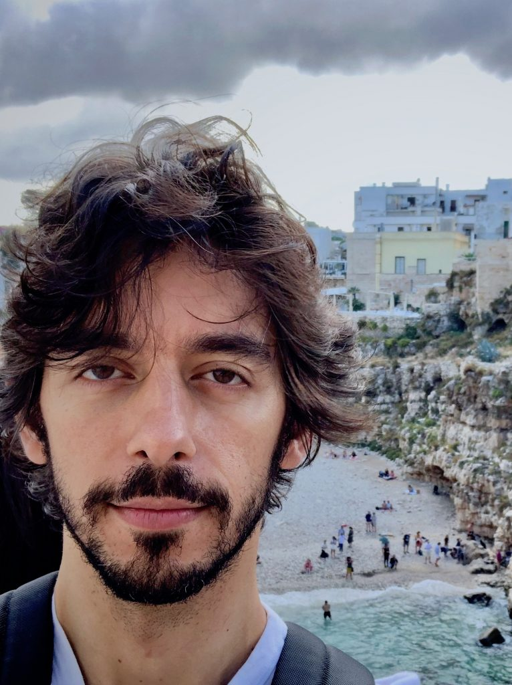
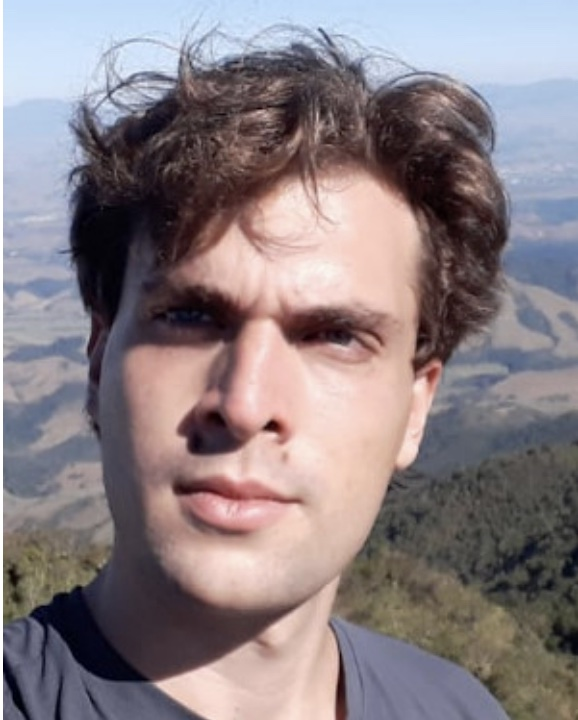
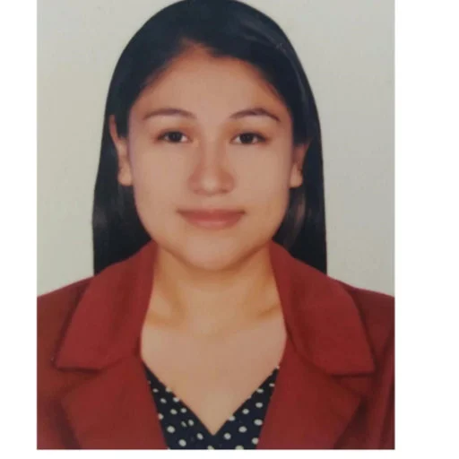
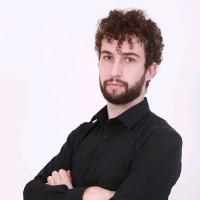
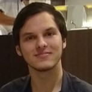
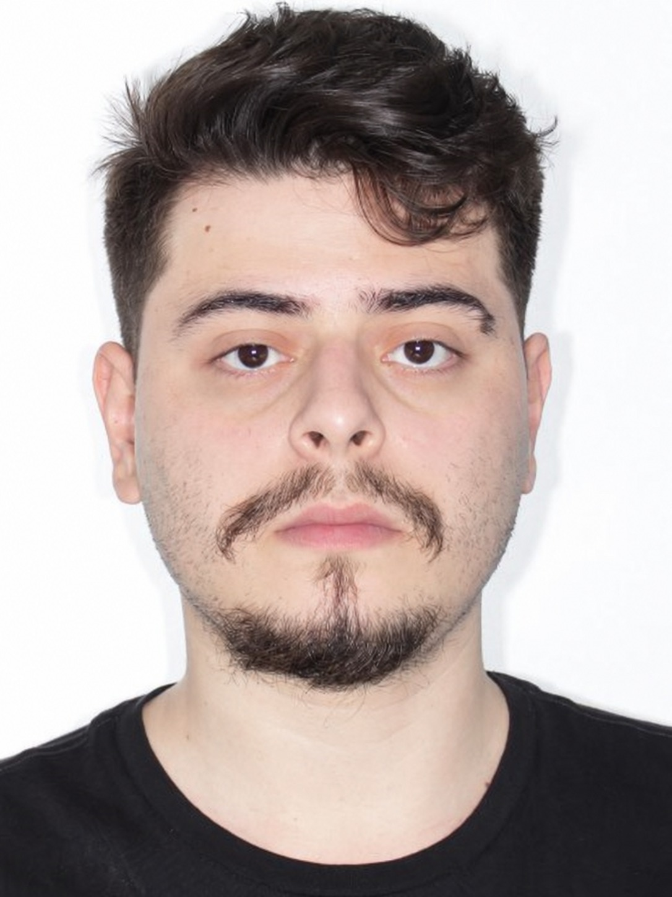
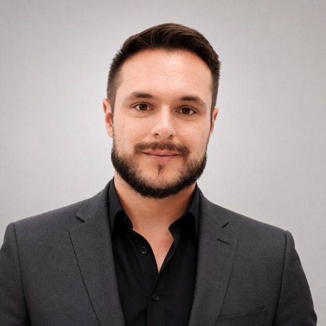
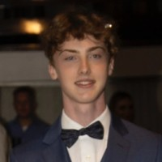
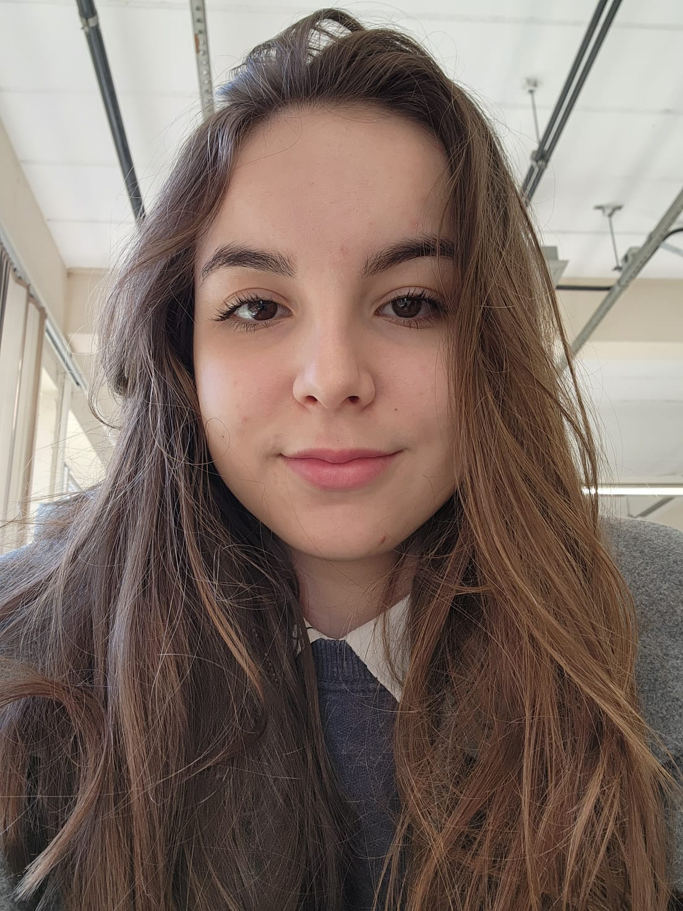

Eric Aislan Antonelo
Professor / Coordinator
Professor at UFSC (EAS). Research interests include autonomous systems, imitation learning, reservoir computing, and physics-informed neural networks for modeling and control.
GSAI conducts research in artificial intelligence for autonomous systems, with emphasis on vehicles and robots, and on physics-informed neural networks for control (PINC). The group connects perception, imitation learning, generative models, control, and physical knowledge in real-world problems.
The group advances machine learning and control methods for intelligent autonomous systems, spanning end-to-end driving, Bird’s-Eye View representations, multimodal imitation learning, physics-informed modeling, and control of nonlinear dynamical systems.
GSAI’s research portfolio is organized around two complementary axes: autonomous systems and physics-informed neural networks for control. This combination allows the group to work on both data-driven intelligence and physically consistent decision-making.
Two core directions shape the current agenda of the group.
Research on intelligent vehicles and robots, especially policy learning for navigation in complex environments.
Development of models that incorporate physical laws into learning for simulation and control.
Highlighted project currently under development in the group.
The project investigates advanced imitation learning approaches for autonomous driving, including GAIL, energy-based models, and diffusion models, combined with Bird’s-Eye View (BEV) representations. The main objective is to improve generalization beyond traditional behavior cloning in dynamic, multimodal urban driving scenarios. Experiments are conducted in CARLA and transferred to a miniature vehicle operating on simulated urban tracks and real campus sidewalks.
Current team of staff and students.

Professor / Coordinator
Professor at UFSC (EAS). Research interests include autonomous systems, imitation learning, reservoir computing, and physics-informed neural networks for modeling and control.

PhD Student
Works on sim-to-real autonomous driving, including the development of a digital twin of the CTC campus at UFSC, implicit behavioral cloning, and validation on miniature autonomous vehicles.

PhD Student
Works on temporal modal consistency in learning-from-demonstration policies for multimodal robotic manipulation, with a focus on diffusion-based generative policies.

Master Student
Works on Bird’s-Eye View generation from autonomous vehicle cameras using transformers.

Master Student
Works on imitation learning based on generative models for autonomous vehicles.

Master Student
Master’s student in the GSAI research group.

Master Student
Master’s student in the GSAI research group.

Undergraduate Student
Undergraduate researcher in AI and autonomous systems.

Undergraduate Student
Works on imitation learning and trajectory prediction for autonomous vehicles.
Polytechnic of Leiria / University of Coimbra — Portugal
Automatic control, GNSS positioning, autonomous vehicles.
UMONS — Mons, Belgium
Control, optimization, autonomous systems.
UDESC — Joinville, Brazil
Mobile robotics, autonomous systems, trajectory control.
EAS — UFSC
Mathematical optimization, distributed control, energy systems.
EAS — UFSC
Robust nonlinear control, state estimation, robotics.
Selected demonstrations illustrating key results from the group in autonomous driving, imitation learning, and reinforcement learning.
Demonstration of the PPO-Beta policy achieving 913 ± 26 over 100 episodes on CarRacing-v0 — the best result listed on the archived OpenAI Gym CarRacing-v0 leaderboard.
Hierarchical Generative Adversarial Imitation Learning controlling an autonomous vehicle in CARLA with traffic lights, pedestrians, and surrounding traffic.
Demonstration of command-conditioned behavior generation in CARLA, showing different plausible maneuvers at the same urban intersection.
Video demo associated with the Weighted Behavior Cloning project, illustrating autonomous driving performance in CARLA and complementing the comparison with standard behavior cloning.
More demos are available in the related project pages, especially for hGAIL and Weighted Behavior Cloning. Additional videos on miniature autonomous vehicles and sim-to-real experiments can be added as they become publicly available.
A curated list highlighting recent work aligned with the two main themes of the group. See full list (with PDFs) →
Neurocomputing · 2024
Engineering Applications of Artificial Intelligence · 2025
Neurocomputing · 2025
IEEE Transactions on Intelligent Vehicles · 2024
Lecture Notes in Computer Science · 2025
ENIAC · 2025
CROS · 2025
ENIAC · 2025
Selected former graduate and undergraduate students involved in research related to the group.
Academic home of the group.
Eric Aislan Antonelo
Department of Automation and Systems Engineering (EAS), Federal University of Santa Catarina (UFSC), Florianópolis, Brazil.
Homepage: ericantonelo.paginas.ufsc.br